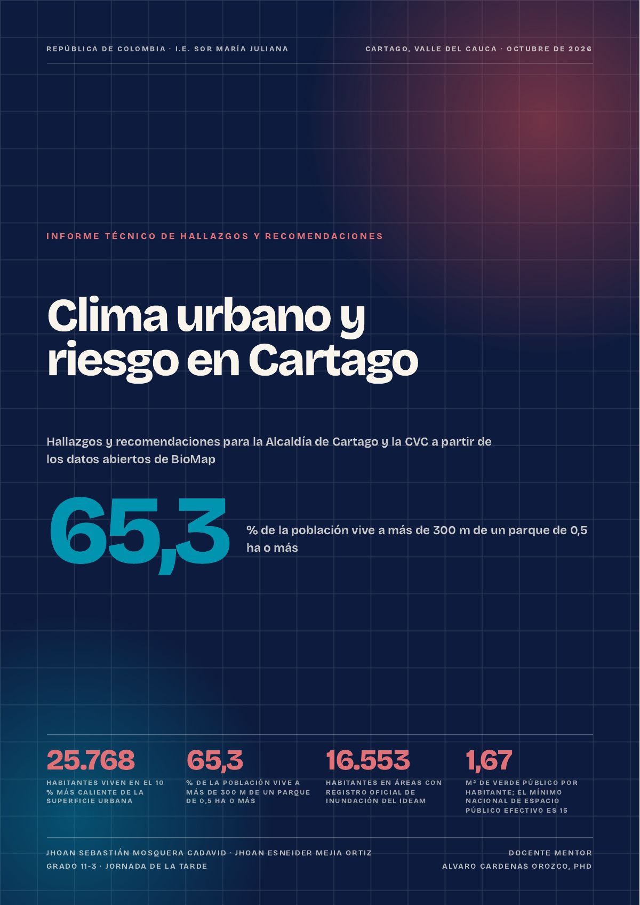

BioMap Cartago: clima urbano y riesgo con datos abiertos
Dos estudiantes de grado 11 de la I.E. Sor María Juliana convirtieron imágenes de satélite, censos y registros del IDEAM en un observatorio del clima urbano de Cartago y en un informe con 26 acciones para la Alcaldía y la CVC.
- 25.768personas viven en el 10 % más caliente de la ciudad
- 65,3 %de la población vive a más de 300 m de un parque
- 1,67 m²de verde público por habitante
- 16.553personas en áreas con registro oficial de inundación del IDEAM

Jhoan Sebastián Mosquera Cadavid y Jhoan Esneider Mejia Ortiz, estudiantes del grado 11-3 (jornada de la tarde) de la I.E. Sor María Juliana, construyeron BioMap Cartago con la mentoría del docente Alvaro Cardenas Orozco, secretario del CEID. Es un observatorio geoambiental de datos abiertos que responde lo que la ciudad necesita para decidir: dónde está el calor, quién vive expuesto, dónde falta verde y quién vive en zonas inundables.
Abrir la plataforma BioMap Cartago ↗
Por qué es investigación
BioMap no es un visor de mapas: parte de preguntas sobre la ciudad, las responde con un método que cualquiera puede repetir y declara sus límites.
- Datos abiertos reales. Imágenes Landsat (NASA y USGS) y Sentinel-2, cobertura de ESA WorldCover, población DANE 2026, registros del IDEAM, clima reconstruido de Copernicus y mapas de OpenStreetMap. No hay cifras inventadas.
- Método reproducible. Programas en Python procesan cada capa sobre una rejilla común de unos 28 m, y cada capa trae su ficha de método.
- Límites a la vista. Son estimaciones para priorizar, no mediciones de campo: la temperatura de la superficie no es la del aire, y antes de ejecutar obras hay que contrastar con el POT, la CVC, el IDEAM y una visita técnica.
- Un producto para decidir. Un informe de 45 páginas para la Alcaldía de Cartago y la CVC, en lenguaje claro y con el fundamento legal de cada acción.
- 139.554habitantes de la cabecera (Comunas 1 a 7 y Zaragoza)
- 8hallazgos con su evidencia
- 26acciones para 9 dependencias de la Alcaldía y la CVC
- 48referencias en APA
Fuente: BioMap Cartago, informe de hallazgos y recomendaciones (octubre de 2026).
El calor no se reparte igual
Casi 1 de cada 5 habitantes de la cabecera (18,5 %) vive en el 10 % de la ciudad con la superficie más caliente. En las Comunas 4, 5 y 6 es más de 1 de cada 3, y allí menos del 5 % del entorno de las casas tiene árboles.
Fuente: BioMap Cartago (Landsat 2022–2025, NASA y USGS; población DANE 2026). Calor extremo: el 10 % de la cabecera con la superficie más caliente (42,85 °C o más).
Poco verde, y lejos de casa
La cabecera tiene 1,67 m² de verde público por habitante; el informe lo compara con el mínimo nacional de espacio público efectivo, que es de 15 m². Y casi 2 de cada 3 personas (65,3 %) viven a más de 300 m de un parque de 0,5 hectáreas o más.
Fuente: BioMap Cartago (verde público de OpenStreetMap de 0,5 ha o más; población DANE 2026).
El agua también cuenta
16.553 personas, el 11,9 % de la cabecera, viven en áreas con registro oficial de inundación del IDEAM. La Comuna 7 concentra la mayor parte; sin el área dudosa de La Niña 2011, su porcentaje baja a 19,3 %. En las Comunas 2, 3 y 5 es menor al 0,1 %.
Fuente: BioMap Cartago con los registros del IDEAM (amenaza alta por creciente súbita y eventos La Niña 1988–2022).
El clima ya cambió
Desde 1950, la temperatura del aire en Cartago sube entre 0,18 y 0,29 °C por década, y 2024 fue el año más cálido de la serie. Los días con temperatura máxima inusualmente alta son hoy más del triple que entre 1961 y 1990.
Fuente: BioMap Cartago con registros climáticos reconstruidos de Copernicus (ERA5-Land y ERA5).
Las escuelas, en el mapa
Este hallazgo toca de cerca al magisterio. De 34 colegios, sedes de salud y otros servicios mapeados en la cabecera, 4 están en calor extremo de superficie, entre ellos el colegio Sor María Anastasia. Otras cuatro sedes educativas quedan a menos de 0,5 °C del umbral: la I.E. Alfonso López Pumarejo, la Escuela Caldas, Manuel Quintero Penilla y Lastenia Durán Vernaza (de la I.E. Sor María Juliana).
Fuente: BioMap Cartago, hallazgo 6 (comparación gruesa con el registro del Ministerio de Educación, 2026).
Por eso la lista real de sedes expuestas puede ser bastante mayor. El informe recomienda a la Secretaría de Educación cruzar su registro oficial con los mapas de BioMap. El CEID ya tiene información de 38 sedes oficiales de la ciudad, del análisis que hizo tras el sismo del 10 de agosto: es un punto de partida para completar ese cruce.
Lo que proponen
El informe dirige 26 acciones a 9 dependencias, cada una con su fundamento legal (obligación, competencia u orientación) y con una forma de medir el avance. Entre las primeras:
- Incluir la inundación y el calor en la revisión del POT.
- Verificar en campo el área urbana inundada en La Niña 2011 antes de invertir.
- Sembrar árboles en las manzanas habitadas de las Comunas 4, 5 y 6.
Investigar desde la escuela también es servir a la ciudad: con datos abiertos y método, dos estudiantes de Cartago le dieron a su municipio un mapa para decidir.
Cómo citarlo: Mosquera Cadavid, J. S., Mejia Ortiz, J. E. y Cardenas Orozco, A. (2026). Clima urbano y riesgo en Cartago: hallazgos y recomendaciones para la Alcaldía de Cartago y la CVC a partir de los datos abiertos de BioMap. I.E. Sor María Juliana.